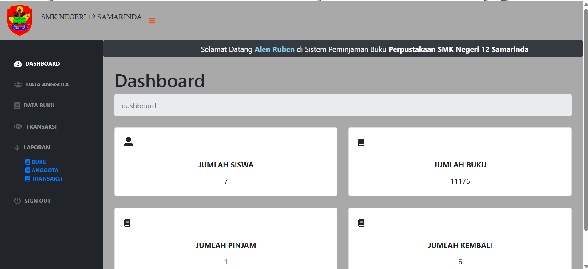
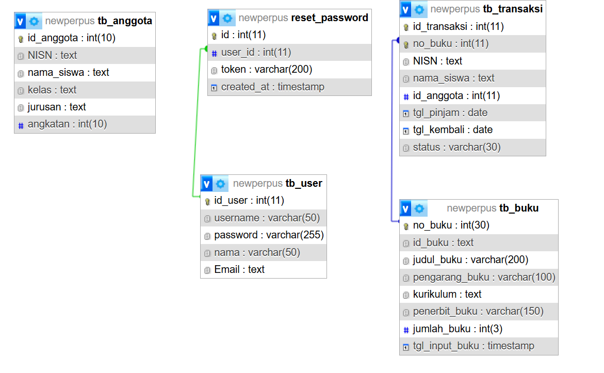

Website perpustakaan berbasis web untuk pengelolaan data buku, data anggota, dan transaksi peminjaman buku menggunakan PHP dan MySQL.
Sistem Peminjaman Buku merupakan project website perpustakaan berbasis web yang digunakan untuk membantu proses pengelolaan data buku, anggota perpustakaan, serta transaksi peminjaman dan pengembalian buku. Sistem dibuat menggunakan PHP dan MySQL dengan tampilan dashboard admin untuk mempermudah monitoring data perpustakaan.
Dashboard admin digunakan untuk monitoring jumlah buku, data anggota, transaksi peminjaman, dan pengembalian buku.

ERD digunakan untuk menggambarkan struktur database dan relasi antar tabel pada sistem perpustakaan.
